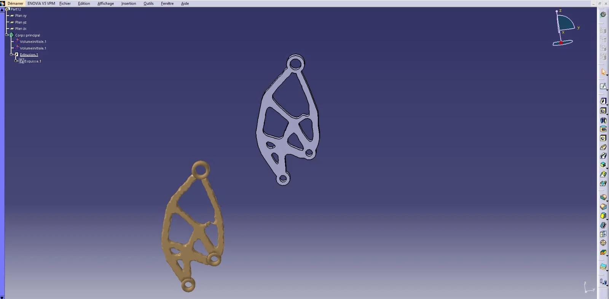
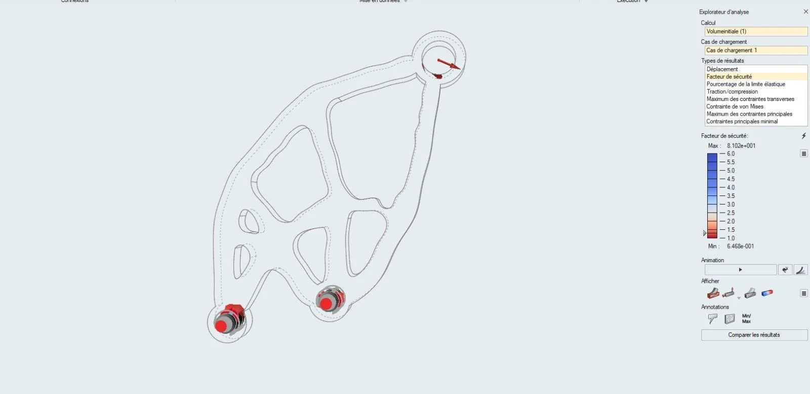
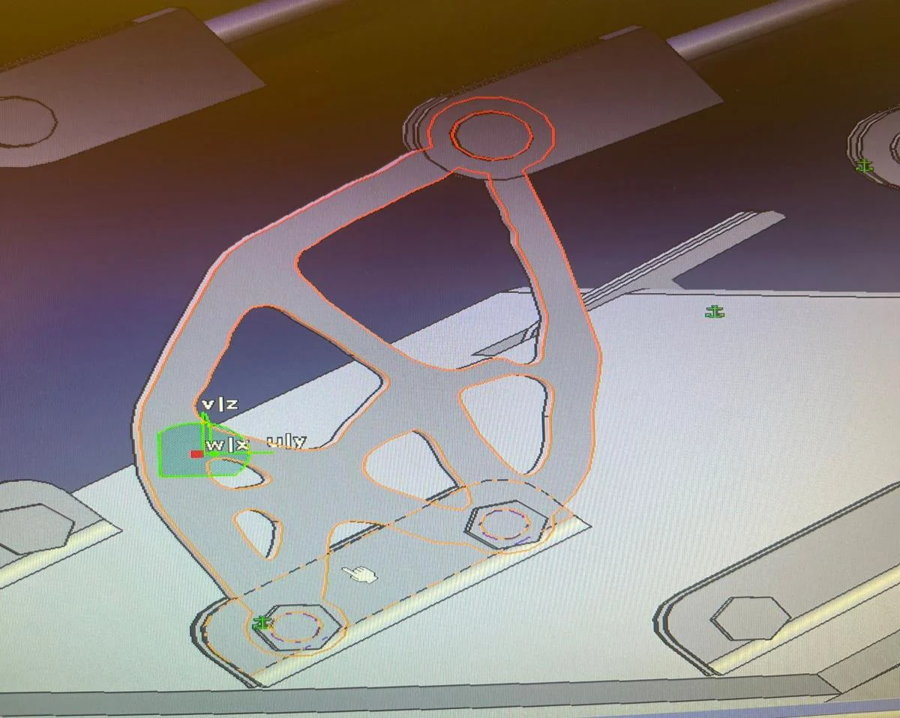
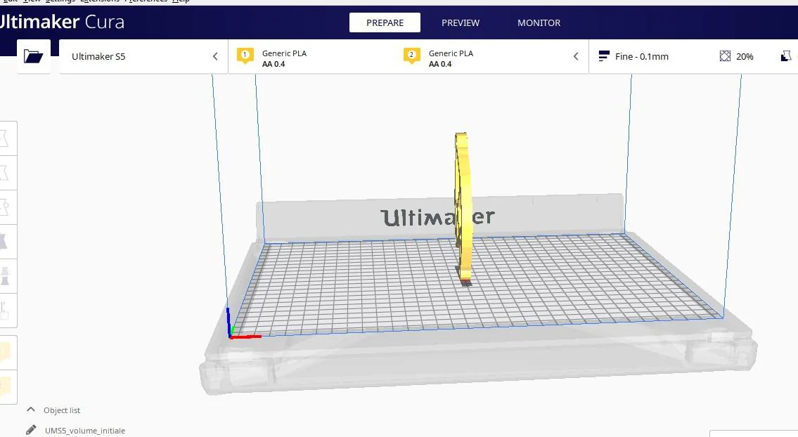
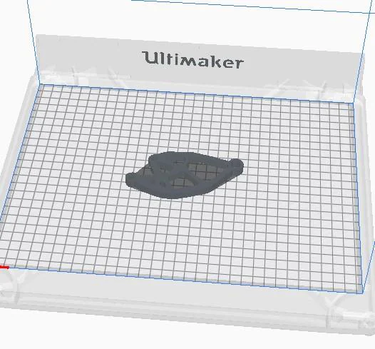

MASSE INITIALE
55g
Conception usinée
Reconception d’un composant transmettant les efforts des vérins pneumatiques aux portes du train d’atterrissage. Étude de la réduction de masse, reconstruction sous CATIA V5, vérification mécanique et fabrication additive.

Ce projet étudie comment réduire la masse d'une pièce mécanique liée aux portes du train d'atterrissage, sans modifier ses interfaces de fixation. Une optimisation topologique sous Altair Inspire a guidé la redistribution de matière, suivie d'une reconstruction sous CATIA V5 / PolyNURBS. La préparation en fabrication additive a été explorée avec 12 configurations Cura, puis une estimation des coûts a été réalisée. Les masses retenues passent de 55 à 24 g (allègement théorique ≈ 56 %). La résistance n'est pas encore validée : le facteur de sécurité minimum observé (≈ 0,647) est inférieur à la cible de 1,25.
De la conception initiale à la vérification mécanique et à l'évaluation des coûts.
Définir le volume et protéger les interfaces des vis et de la goupille.
Appliquer 2 300 N, préserver les surfaces fonctionnelles et alléger.
Lisser la forme, puis vérifier les résultats mécaniques.
Évaluer les orientations, la durée, la matière et les hypothèses de coût.
Le volume initial doit préserver les emplacements de deux vis d'assemblage et d'une goupille, tout en évitant les collisions pendant l'ouverture et la fermeture des portes.
Les résultats économiques et mécaniques nécessitent plusieurs vérifications : cohérence des masses, calcul des coûts et facteur de sécurité.
Paramètres de chargement, propriétés du matériau et interprétation des résultats numériques. Le facteur de sécurité affiché reste inférieur à la cible mécanique.

Sur la capture reproduite, l'échelle du facteur de sécurité indique un minimum de l'ordre de 0,647, alors que l'objectif annoncé est 1,25.
Propriétés utilisées dans la modélisation, à confirmer par caractérisation du matériau.
Ajouter les conditions aux limites détaillées, la direction réelle du chargement, le maillage, les propriétés issues d'une fiche matériau et les résultats chiffrés après PolyNURBS. Ces éléments sont nécessaires pour une validation mécanique complète.
Découvrez les géométries CAO. Un fichier STL peut être importé pour explorer un modèle en trois dimensions.

Les interfaces d'assemblage doivent rester inchangées pendant l'optimisation, avec une zone fonctionnelle protégée de 3 mm dans cette étude.
Le visualiseur ouvre un STL depuis votre ordinateur, sans envoyer le fichier vers un serveur. Les vues 2D ne remplacent pas un modèle géométrique 3D natif.
Plan d'expériences Cura, comprenant deux orientations, trois épaisseurs de couche et deux vitesses d'impression.


Les valeurs « 0 » de masse en orientation A sont affichées comme non renseignées.
| Orientation | Épaisseur | Vitesse | Durée | Masse | Coût imprimante* |
|---|
Le bilan économique annonce 2,6 h et 24 g, tandis que le tableau du plan d'expériences présente, pour l'orientation B, environ 14,1 à 14,3 g. Une traçabilité entre la configuration retenue et les données Cura reste nécessaire.
Étude paramétrique des coûts de fabrication et d'exploitation. Le poste carburant repose sur une hypothèse de 7 000 €/kg allégé sur le cycle de vie.
Comparaison de scénarios selon les postes chiffrés, sans coûts de qualification, maintenance, certification ni variabilité matière. Elle ne démontre pas à elle seule la rentabilité réelle.
Bilan initial annoncé : 425 € ; nouvelle conception : 326,272 €. La comparaison interactive s'appuie sur la somme vérifiable de chaque poste de coût.
Synthèse des points à valider pour renforcer la fiabilité mécanique et économique du projet.
Interfaces de fixation, goupille, espace de conception et reconstruction géométrique.
CATIA V5 · PolyNURBSCharge maximale de 2 300 N, matériau CPE CFF et vérification du facteur de sécurité.
Altair Inspire · Critère cible : 1,25Orientations d'impression, paramètres de fabrication additive et estimation des coûts.
Ultimaker Cura · Analyse technico-économiqueLes postes 40 € + 40 € + 385 € donnent 465 €, alors que le bilan initial affiche 425 €.
Nouvelle pièce annoncée à 24 g ; mesures orientation B du plan d'expériences autour de 14,1–14,3 g ; valeurs de masse de l'orientation A non renseignées.
La capture Inspire présente un minimum d'environ 0,647 ; seuil exigé : 1,25. Les conditions exactes de la capture ne sont pas établies.
Confirmer les valeurs de module d'Young, résistance et densité par une fiche matériau ou des mesures expérimentales.
Prévoir la caractérisation du matériau imprimé, le contrôle dimensionnel et des essais mécaniques du prototype.
Compléter la validation par des résultats éléments finis reproductibles, la caractérisation du matériau et des essais mécaniques sur la pièce fabriquée.